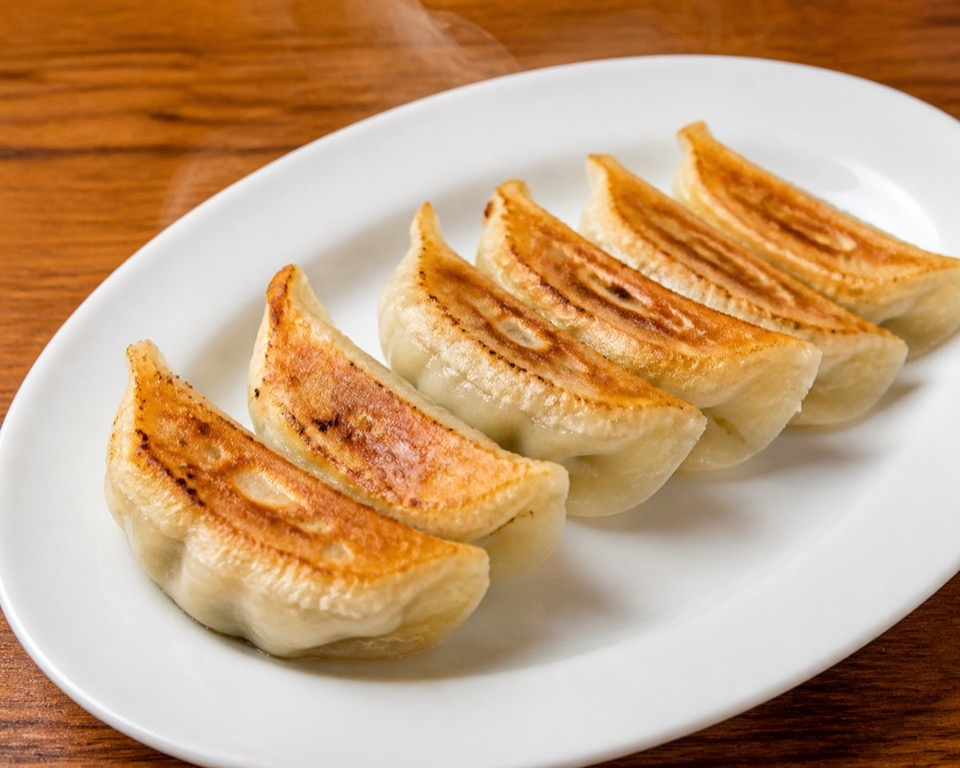
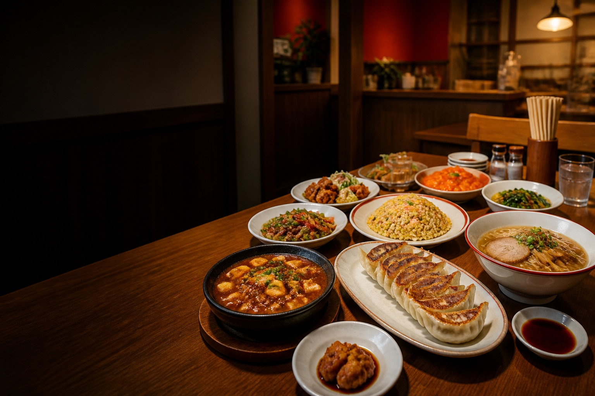
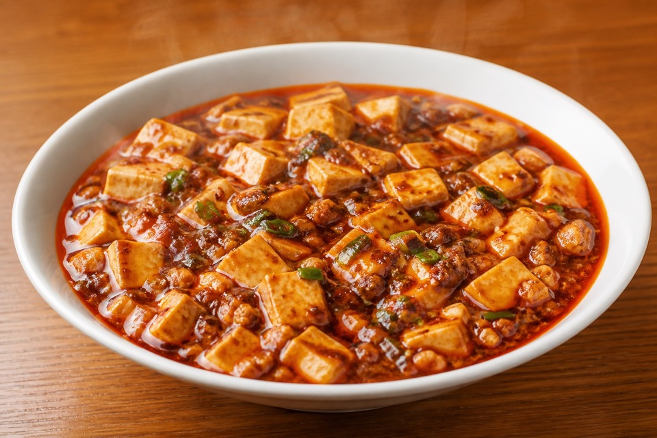
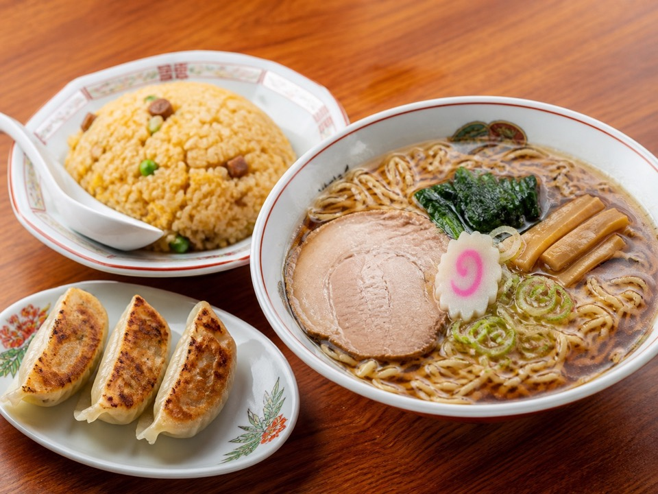

人気 No.1手作り餃子
外は香ばしく、中はジューシー。一つ一つ丁寧に包む町中華ならではの味。

家族みんなで楽しめる、まちの中華
手作りの温かさと、出来立てのおいしさを。
今日も元気にお待ちしています。
ランチ・夜ご飯・宴会に お子様連れ歓迎
ABOUT US
地域の皆様に愛される街の中華料理店。
定番料理から本格中華まで、豊富なメニューをご用意しています。
ご家族でのお食事、普段使いのランチ、仕事帰りのお食事、宴会まで幅広くご利用いただけます。気取らず、ゆっくり、お腹いっぱい。いつもの食卓のようにお過ごしください。
いらっしゃいませ。今日も温かい一皿をどうぞ。
RECOMMENDED
迷ったら、まずはこちらから。

人気 No.1外は香ばしく、中はジューシー。一つ一つ丁寧に包む町中華ならではの味。

店主おすすめ麻婆豆腐、麻婆ラーメンなど人気メニュー。ご飯にも麺にも合うおすすめ料理。
 平日人気
平日人気サラリーマンにも人気。しっかり食べられる、ボリューム満点のランチ。

ラーメンと炒飯、餃子など、お腹に合わせて組み合わせ自由。
FAMILY & PARTY
ご家族でのお食事から少人数の宴会まで対応。
お子様からご年配のお客様まで、ゆっくり楽しめる空間をご用意しています。
SHOP INFORMATION
赤い看板を目印に、どうぞお気軽にお越しください。